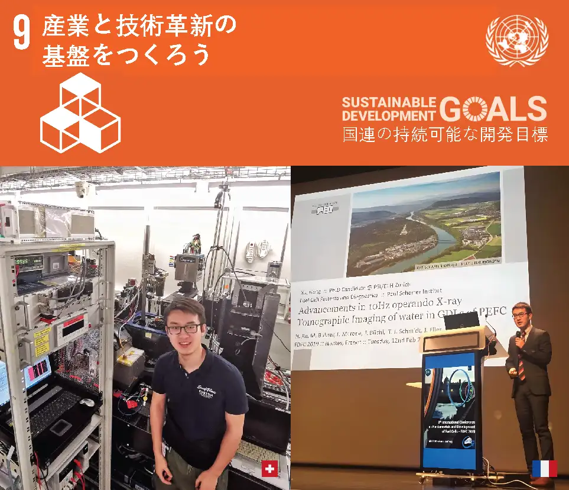
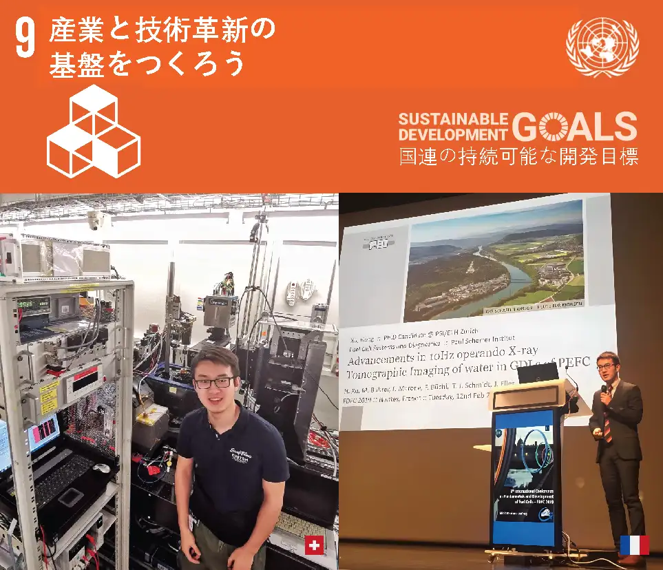
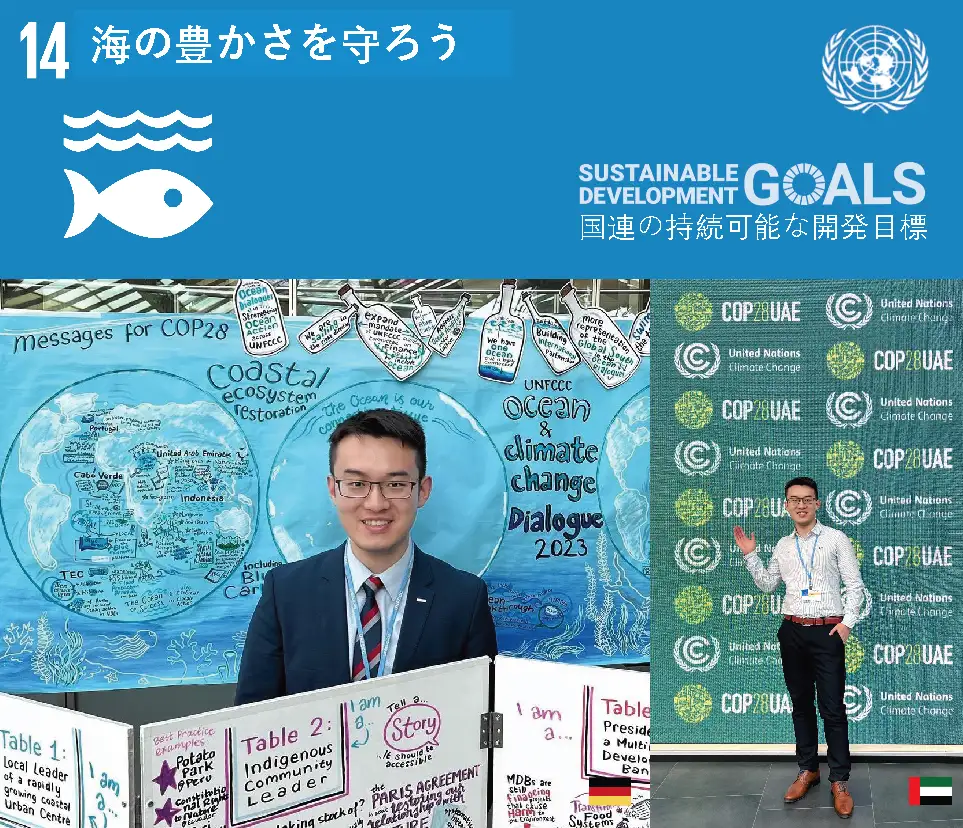
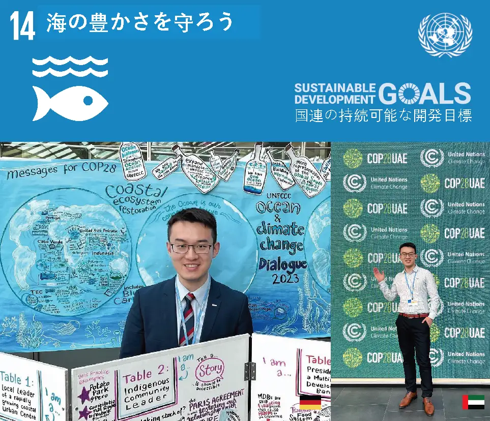

♾️
♾️
 ドイツ: ハンブルクにはハンバーガーはないが、美味しいフライドフィッシュがある
ドイツ: ハンブルクにはハンバーガーはないが、美味しいフライドフィッシュがある フランス: パリ、流れる饗宴
フランス: パリ、流れる饗宴 スイス: チューリッヒ、金融と湖の街
スイス: チューリッヒ、金融と湖の街 中国: 北京、万里の長城に守られた六朝古都
中国: 北京、万里の長城に守られた六朝古都 アメリカ: ワシントン、権力と自由のゲーム
アメリカ: ワシントン、権力と自由のゲーム イギリス: オックスフォード、古典と哲学の楽園
イギリス: オックスフォード、古典と哲学の楽園
こんにちは！
地球
からの友人を歓迎します:-)

ようこそ、地球
からの友達 :-）
火打石から電気自動車に至るまで、エネルギーは文明の進歩を定義する基盤です。「創先-創新–創效」の理念を掲げ、徐泓 (歳) 博士はエネルギーと交通分野における効率向上とカーボンニュートラルの実現に取り組んでおり、研究領域は太陽電池、リチウム電池、電解槽、及び水素燃料電池を含みます。学位取得期間中、国際企業および中欧の学術機関と協力し、論文編以上（引用回以上）を発表し、件の特許を出願（うち3件は権利取得済み）しました。スイス光源とトヨタ中央研究所との共同研究により開発された燃料電池健康診断用の超高速（0.1秒）高分解能（0.4µm）X線CT技術は、スイス連邦のパウルシェラー研究所により科学的ハイライトとして推薦され、米国電気化学学会に論文招待され、アトランタでの学会発表に資金支援を受けました。さらに、国連ボン気候変動会議では「中国のエネルギー転換と技術革新」セッションを主催し、国連欧州経済委員会の交通と気候専門家グループ会議や水素エネルギーワーキンググループ会議にも複数回参加しました。また、エネルギーと交通分野の高インパクトジャーナル10誌以上で査読者を務め、スイスのザンクトガレン国際経済フォーラム学術評価者、ドイツ・ミュンヘン工科大学校友メンター、英国オックスフォードエネルギー研究所客員研究員、及びオーストリア・ザルツブルク国際学者を務めました。
彼は2021年初めにスイス連邦工科大学チューリッヒ校で再生可能エネルギー分野の博士号を取得しました（スイス科学財団の支援による）。その前にドイツ・ミュンヘン工科大学で修士号を取得し、16歳で北京交通大学に入学して学士課程を修了しました（イノベーション奨学金受給）。彼は学士・修士・博士課程を通じて再生可能エネルギーと新素材の研究開発に専念しました。欧州自由電子レーザー （EuXFEL）、フランス・パリ理工学院、ドイツ・ミュンヘン大学などでインターンを行い、トヨタ自動車、インフィニオン半導体、コードバパワーなど多国籍企業との深度な研究開発協力も実施しました。さらに、2年間のスイス-日本間の大学-企業技術移転プロジェクトや、中仏協力枠組みでの技術研修プロジェクトも担当しました。科研・技術開発の傍ら、フランス工学アカデミーMBA全額奨学金を受け入学、桑坦德銀行奨学金によりケンブリッジ大学ジャッジビジネススクールで「グリーントランスフォーメーション」経営課程を修了。さらに、中国の大手証券研究所（A株/米株）で個別銘柄の詳細レポートを作成し、複通貨ファンド（シード〜シリーズA）で再生可能エネルギー分野のベンチャー投資実務にも従事しました。
PEK (NǐHǎo)-> CDG (Bonjour)-> HAM (MoinMoin)-> MUC (Servus)-> ZRH (Grüezi)-> ?
持続可能な開発目標 2030
 

 

私に連絡して
- メッセージボード: scholar.h-xu.com/jp-contact（ご連絡をお待ちしております）
- オンライン会議: calendly.com/heliosxu/45min (1対1の会議、事前に予約してください)
- LinkedIn: linkedin.com/in/xuhong/ (フォロワー: 人)
- グーグル学者: UNchM2kAAAAJ&hl (引用数: 回)